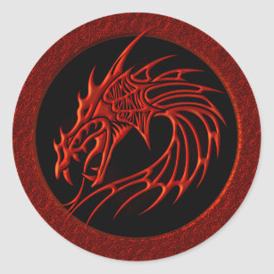

Estoico el Vasto (Stoick the Vast en inglés) Fue el padre de Hipo y el jefe de mal genio de la tribu de los Gamberros Peludos. Él espera que su hijo madure y sea lo suficientemente fuerte como para ser el jefe por su cuenta algún día, pero teme que no esté hecho para la vida vikinga. Estoico tiene un casco con cuernos grandes (supuestamente la mitad de la pechera de su esposa) y es el mejor amigo de Bocón el Rudo. En la serie, Estoico entrena un Trueno Tambor/Relámpago, el cual llama Thornado. En la segunda temporada, Estoico lo libera para que pueda criar a tres adolescentes de su especie en el episodio ¡Bing! ¡Bam! ¡Bum!. En la segunda película, a Estoico se lo ve con un nuevo dragón, un Cuernatronante llamado Rompecráneos. Cerca del final de la película, Estoico es asesinado por Drago Manodura, quien logró hacer que su alfa controlara a Chimuelo. Biografía En la película En la película Estoico el Vasto es representado como el líder perfecto de la tribu vikinga en la Isla de Berk: Grande, fuerte y obstinado. Desafortunadamente, Hipo, su hijo y heredero al trono de Berk, es casi exactamente lo contrario y con frecuencia causa dolor a los aldeanos cuando su deseo de matar a un dragón como el resto saca lo mejor de él. Y Estoico es retratado como incierto sobre qué hacer con él. Durante un ataque de los dragones a la aldea, Hipo inadvertidamente hace que la horda de dragones se escape con el ganado al tratar de escapar de un Pesadilla Monstruosa. Estoico tiene que enfrentarlo por su cuenta para que deje de intentar matar a Hipo. Decepcionado de su hijo, Estoico desea encontrar el Nido de los dragones que atormentan su aldea para terminar con la guerra de una vez por todas. Antes de partir para buscar el Nido, él discute con Bocón sobre qué hacer con Hipo. Bocón cree que si Hipo tanto desea matar un dragón Después de unas semanas, Estoico y el resto de los Vikingos regresan en sus naves devastadas,
, debería dejarlo ir al Entrenamiento contra Dragones. Después de recibir más de un titubeo inicial, Estoico acepta. Hipo le promete que algún día matará un dragón y Estoico lo pone en la clase antes de partir a acabar con los dragones de una vez por todas.
Después de unas semanas, Estoico y el resto de los Vikingos regresan en sus naves devastadas,
después de haber sido incapaz de localizar correctamente el Nido. A pesar de esto, se pone muy contento después de escuchar que su hijo se a convertido en el cazador más prometedor de la clase, y cuando más tarde se le dio el honor de matar a su primer dragón en frente de todo el pueblo. Aunque Estoico no lo sabía, el éxito de Hipo en el Entrenamiento contra Dragones deriva de que este ha pasado a escondidas demasiado tiempo con Chimuelo, el Furia Nocturna que derribó, y que después hizo amistad, incluso fue capaz de montarlo, gracias a una prótesis de cola creada por él. Sin darse cuenta, pero aún ansioso por conectarse de nuevo con su hijo, Estoico aprovecha la oportunidad para hablar con Hipo, charla en la cual le da su propio casco vikingo hecho de la pechera de su "difunta" madre.
Estoico se enfurece cuando se da cuenta de que Hipo ha estado pasando su tiempo con Chimuelo, volviendo en su acuerdo de dejar que Hipo mate un dragón. Hipo intenta negociar con Estoico pero accidentalmente revela que Chimuelo conoce la ubicación del Nido de los Dragones y que él ha estado allí. Estoico rápidamente denuncia a Hipo que ya no es su hijo por ponerse del lado de los dragones y da ordenes al pueblo de navegar a la isla, ignorando las advertencias de Hipo sobre la Muerte Roja. Con Chimuelo atado a la nave central para guiarlos, Estoico navega en busca del Nido de los Dragones.
Estoico y los Vikingos llegan al Nido a través de Chimuelo y entran en la montaña que alojaba a los dragones. Sin embargo, cuando Estoico intenta atacar a los dragones del interior, se sorprende de que estos huyan del lugar. Muerte Roja aparece de la montaña e inmediatamente incendia sus barcos (con Chimuelo todavía en la nave central), dejando varados a los Vikingos. Estoico y Bocón inmediatamente deciden sacrificarse para conseguir el tiempo suficiente para que los aldeanos se refugien del otro lado de la isla, entonces Hipo y los otros llegan montados en dragones, para el asombro de Estoico. Debido al alboroto que Muerte Roja causó, la nave en la que Chimuelo estaba encadenado, se hunda. Hipo intenta desesperadamente liberar a Chimuelo, después de que casi se ahoga con su dragón, Estoico, dándose cuenta de sus errores, nada en el agua y le arranca las cadenas a Chimuelo. Estoico se disculpa por no haber escuchado a su hijo y le dice lo orgulloso que está de él. Hipo y Chimuelo, luego, rápidamente alcanzan los cielos para acabar rápidamente con la Muerte Roja.
Después de la batalla, Estoico busca a Hipo pero solo encuentra a Chimuelo tendido en el suelo con la montura y la prótesis de cola quemada. Estoico inclina la cabeza, creyendo que Hipo murió en la lucha, y que es su culpa. Chimuelo ve la disculpa de Estoico y abre sus alas, revelando a Hipo inconsciente. Estoico le da las gracias a Chimuelo por traer a su hijo en una sola pieza, rechazando sus antiguas creencias sobre los dragones. Después de la batalla en el Nido, Estoico le permite a los dragones quedarse en el pueblo como mascotas y como amigos, orgulloso de llamar a Hipo como su hijo.
En Dragones de Berk En la serie de TV, Estoico continúa en su papel de jefe de Berk, que se ha hecho más complicado por la adición de los dragones. En Cómo empezar una escuela de dragones, el problema causado por los dragones (y el escándalo del pueblo) forzó a Estoico a ordenar que los enjaularan. Después de que Hipo y sus amigos demostraran lo útiles que los dragones pueden ser, Estoico le permitió crear la "Academia de Entrenamiento de Dragones".
En Cómo Elegir a tu Dragón, Estoico, decide aprender a montar un dragón para vigilar mejor la isla, utilizando a Chimuelo. Desafortunadamente, Estoico no es muy bueno manejando la cola de Chimuelo, haciendo que este quede muy exhausto, por lo que Hipo queda a cargo de enseñarle a entrenar a otro dragón distinto. Más tarde, después de que el padre de Hipo rechazara todos los dragones de la Academia, les alertan de que un Trueno Tambor está robando los peces de los barcos pesqueros. Estoico atrapa con redes al dragón y lo encierran con un bozal en la Academia, aunque después el padre de Hipo lo libera porque "tiene que saber quién manda", accidentalmente dejándolo escapar. Más tarde, Estoico y su hijo lo encuentran pero Estoico manda a Hipo a alertar al resto de sus amigos. Cuando estaba a punto de atacarlo con un martillo, él se da cuenta de que sólo estaba protegiendo a un compañero herido de los jabalíes. Entonces Estoico lo ayuda y le saca el bozal, ganándose su confianza. De esta manera, Estoico se convirtió en un jinete de dragones.
En Dragones: Carrera al Borde En la temporada 2 de la serie exclusiva de Netflix, en el episodio Aplástalo, un Cuernatronante atacaba la Orilla del Dragón, por lo que los jinetes pidieron su ayuda. Al ver que se trataba de un dragón testarudo y grande, decide quedárselo, y se acerca al dragón, terminando siendo amigos, y le pone por nombre Rompecráneos, luego se lo lleva de vuelta a Berk.
En Cómo Entrenar a tu Dragón 2 En la segunda película, Estoico hace su primera aparición coordinando la carrera de dragones entre los adolescentes. Más tarde, él y Bocón salen en sus dragones a buscar a Hipo, quien se había subido al barco de Eret para que lo llevara con Drago Manodura. Estoico intenta razonar con él diciéndole que Drago estaba demente, que una vez se presentó ante el consejo de jefes para ofrecer deshacerse de los dragones, pero como no lo escucharon, mandó dragones armados a incinerar todo el lugar. Como Hipo siguió sin escucharlo, Estoico y el resto de los jinetes que venían de refuerzo se lo llevaron por la fuerza.
Cuando Hipo escapó de nuevo, otra vez él y Bocón salieron a buscarlo, pero esta vez solos. En el camino, logró encontrar flotando en el agua el casco de Hipo, que recogió inquieto y le dio a Rompecráneos para que lo rastreara, el cual los llevó hasta el nido de hielo de la Salvajibestia. Al encontrar a Hipo, intentó llevárselo por la fuerza hasta que en el camino se encontró con Valka, su esposa. Valka creía que le iba a gritar por no haber vuelto en 20 años a Berk, pero en realidad Estoico le dijo que estaba tan hermosa como el día en que se fue. Valka los invitó a los tres a cenar.
Aunque al principio Valka se sentía incómoda por no haber estado con su familia en tanto tiempo, luego comenzó a alegrarse cuando Estoico la hizo recordar su canción especial llamada "For the Dancing and the Dreaming" en inglés, y en español "En las danzas y en los sueños" . Hipo propuso que Valka mudara el nido cerca de Berk para así poder estar juntos de nuevo como familia y más seguros. Todos aceptaron pero pronto llegó Drago con su ejército a atacar al nido. Durante la batalla, Valka casi muere en manos de Drago, pero Estoico lo detiene y lucha contra él, hasta que le ordena a su Salvajibestia, el nuevo alfa del nido, tomar el control de Chimuelo para que mate a Hipo. Estoico se apresura a empujar a su hijo, recibiendo el disparo por él. Después de la batalla, recibió una ceremonia vikinga de despedida un funeral.